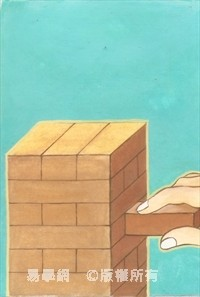

既濟卦 水火既濟
既濟，亨小利貞。初吉終亂。初九，曳其輪，濡其尾，无咎。六二，婦喪其茀，勿逐，七日得。九三，高宗伐鬼方，三年克之，小人勿用。六四，繻有衣袽，終日戒。九五，東鄰殺牛，不如西鄰之禴祭，實受其福。上六，濡其首，厲。
| 
既濟，亨小，利貞。初吉終亂。（圖：小配） |
【卦名】
今本：既濟 帛書：既濟 歸藏：岑𩃟 秦簡：䖭 上博：既濟 海昏簡：氣濟
《易經》六十四卦最後兩卦為既濟與未濟。
依《說文》，濟是一條河流的名字：「濟，水，出常山房子贊皇山，東入泜。从水齊聲。」一般說法認為，濟水（濟音擠）為黃河的一條支流，又名兗水、沇水，今名濟河，但河道已經與古濟水完全不同。濟水發源於河南王屋山，至山東境內名大清河。河南的濟源，山東的濟南、濟寧、濟陽等地皆以濟水而得名。
但作為河流名字，比較不是一般濟字的用法。
《爾雅》對濟字提出多種解釋。〈釋言〉：「濟，渡也，成也，益也。」濟為渡水的意思，也有完成，助益之義。〈月名〉：「濟謂之霽。」霽即下完雨、雪，雨、雪停了。〈釋水〉：「濟有深涉，深則厲，淺則揭，揭者，揭衣也。」濟為渡水。「江河淮濟為四瀆，四瀆者，發源注海者也。」此濟又用作河水名。
然而，濟字的出現相當晚，目前可查最早的是戰國早期的中山王厝方壺。
總而言之，濟原本可能是河水名，後作為渡河的意思。由此再引申出渡口，救濟、助益、幫助，成功，完成，停止。既字原本為一人跪座在食器旁並轉頭，表達「已經」吃飽，為已經、完成的意思。既濟字義也是指完成渡河，引申為已經得到濟渡，已經成功，已經完成。易學上，又意指陰陽之相交，乾卦《彖傳》講的雲行雨施，已經完成。反之，未濟卦就是渡水未能過，未能完成，引申則是陰陽完全不調和。
在古代，既濟和未濟分指渡河與未渡河似乎是相當常見的用語。如《左傳》僖公二十二年：「楚人未既濟，司馬曰：彼眾我寡，及其未既濟也，請擊之。公曰：不可。既濟而未成列......。」文公三年：「秦伯伐晉，濟河焚舟。」「宣公十二年聞晉師既濟，王欲還。」
輯本《歸藏》作岑𩃟，𩃟為霽的異體字。于省吾認為，岑𩃟為既濟的同音假借（《易經新證》卷三）。朱興國認為，岑𩃟通涔霽，涔為陰雨連綿，霽為雨停放晴，涔霽即忽晴忽雨。但依基本字義來看，涔霽意思應該是 連綿之陰雨終停。
王家台秦簡作䖭，不得其解。䖭音眷或卷，為一種蟲，《方言》：「蠀螬謂之蟦，自關而東謂之蝤蠀，或謂之䖭蠾。」蠀螬即長在木頭或土裡像蛆的蟲，例如天牛或甲蟲的幼蟲。侯乃峰引王寧看法認為，䖭音卷，古音與「既」同，《歸藏》（按：侯乃峰將王家台秦簡視為《歸藏》）將「既濟」簡化為「既」，就如將「大有」簡化為「右」（有），「噬嗑」簡化為「筮」（噬）。然後又將「既」讀為「卷」（《周易文字彙校集釋》，台灣古籍出版）。
海昏簡《易占》作「氣濟」，曰：「氣〃濟〃濟者已也。」（氣濟。氣濟，濟者已也。）。氣濟可能是既濟之誤或假借。「氣」通未濟卦「小狐汔濟」的「汔」。
【卦義】
完成濟渡，事情完成，水火相濟而調和。
在《易經》，濟取濟渡之義，引申為完成。既濟即已經渡河，引申為已經完成。因此鄭玄說：「既，已也，盡也。濟，度也。」孔穎達：「濟者濟渡之名，既者皆盡之稱。萬事皆濟，故以既濟為名。」朱熹：「既濟，事之既成也。」
《雜卦傳》：「既濟，定也。」因既濟卦象已得陰陽之調和，因此說是安定。漢易學家如虞翻常以爻變成「既濟定」，荀爽的陰陽升降亦是以成既濟作為基本理論框架，認為陰陽之變與升降會趨向於形成既濟，因為既濟卦六爻得位，陰陽皆得濟，是卦爻最完美與最穩定的狀態。
既濟卦是易經中卦象最完美的一卦，具體來說，它的陽爻都在陽位，陰爻都在陰位，也就是六爻都當位。初九和六四相應、六二和九五相應、九三和上六相應，六爻相應。下卦主爻六二以柔居中當位又承剛，九五君爻剛中當位又乘柔。六二與九五中正相應。然而，既濟卦的危險就在於它的過於完美，因為這意味著未來只有走下坡，所以得既濟卦應當有避免或減緩走下坡的防患未然準備。
就二體卦象來看，離火在下而炎上，坎水在上而潤下，也是水火相交相濟之象。內離明而外坎險，也就是明在險前，不可以仗著條件很好就有恃無恐，而應在危險來臨之前就有所思慮與準備，因此《象傳》說：「君子以思患而豫防之。」「豫防」即「預防」，意思是說要有防患於未然的憂慮。
既濟卦是繼小過而來，《序卦》：「有過物者必濟，故受之以既濟。」又與未濟是成對的綜卦，也是錯卦，換句話說，兩卦彼此相互顛倒，而每個爻位的陰陽也都相反。易經六十四卦這樣的對卦並不多，除了既濟與未濟之外就只有否與泰，以及隨與蠱、漸與歸妹。
既濟與未濟也是六十四卦中結尾的最後兩卦，之所以不將既濟排於最後，是因既濟有終成而窮之義，卦辭說的「初吉終亂」，《彖傳》說的：「終止則亂，其道窮也。」萬物不可窮盡，若以既濟為結束則是代表窮盡，也是六十四卦的結束，但實則天道循環，始卒若環，無始無終，所以以未濟為終，代表這不是一個實質的結束，而是另一循環的開始，所以《序卦》說：「物不可窮也，故受之以未濟終焉。」未濟則未終成，未濟為終則有周而復始，生生不已之義。
總體來說，既濟講的是守成保濟之道，卦爻辭亦多告戒之義。
既濟，亨小利貞，初吉終亂。
《彖》曰：既濟亨，小者亨也。利貞，剛柔正而位當也。初吉，柔得中也，終止則亂，其道窮也。
《象》曰：水在火上，既濟，君子以思患而豫防之。
既濟，小亨通，利於貞定。開始為吉，最終將亂。
物極必反，既濟卦為一切事情的條件都到位，完美到無以復加，但緊接著的則是開始情況逐漸走下坡，走到極點則是既濟成未濟，未濟則亂矣。因此說「初吉終亂」。《大象傳》警告要「思患而豫防之」。
朱熹認為，「亨小」當作「小亨」，《語類》：「既濟，事之既成也。為卦水火相交，各得其用，六爻之位，各得其正，故為既濟。『亨小』當為『小亨』，大抵此卦及六爻占辭，皆有警戒之意，時當然也。」「『亨小』當作『小亨』。大率到那既濟了時，便有不好去，所以說小亨。如唐時貞觀之盛，便向那不好去。」既濟之所以僅得小亨，戒占者當謹小慎微以善終。
由小亨亦可推斷，既濟是以六二為主爻，而不是九五。以此反推，既濟是從需卦而來，需卦與明夷旁通，明夷六五至需二，成兩個既濟。需即濡之本字（詳見需卦），既濟爻辭中有多個濡（九三繻通濡）字或可為證。虞翻以卦變解釋，認為既濟由泰卦而來：「泰五之二。小，謂二也。柔得中，故亨小。」
初吉指下卦離明，終亂為上卦坎險。
【字義】
亨小利貞：先儒多讀作「亨小，利貞」，依《周易》經文讀法，當讀「亨，小利貞」。「小」字一般作為修飾辭之用，並放在欲修飾的字辭之前，《易經》類似的經文如賁與遯卦辭《彖傳》分別讀作「賁，亨，小利有攸往」，「遯，亨，小利貞」，未濟卦則讀作「未濟，亨。小狐汔濟」。再如巽卦有「小亨，利有攸往」，旅卦「小亨，旅貞吉」，顯然除了既濟之外，並無「亨小」的讀法，所以既濟卦辭依現有經文當讀作「亨，小利貞」。但比對《彖傳》，經文似乎有問題：「既濟亨，小者亨也。」「小者亨」似乎指向經文原作「小亨」，但「既濟亨」似乎又顯示現今的經文沒有問題。所以可能「亨小利貞」是「小亨利貞」之誤，朱熹《本義》：「亨小，當為小亨。」《語類》：「既濟是已濟了，大事都亨，只小小底正在亨通，若能戒懼得常似今日便好。」
亨小：有不同的解釋。一、所亨者小事，如蘇軾：「言小者皆在上而亨，大者皆在下而否也。」《折中》引谷家杰：「言所亨者其小事也。」二、亨通及於小處，言無所不亨。如王弼：「小者不遺，乃為皆濟，故舉小者，以明既濟也。」孔穎達：「若小者不通，則有所未濟，故曰『既濟，亨小』也。小者尚亨，何況於大？」程頤：「既濟之時，大者既已亨矣，小者尚有未亨也。雖既濟之時，不能无小未亨也，小字在下，語當然也。若言小亨，則為亨之小也。」三、朱熹認為是小亨之誤，小亨通之義。
初吉終亂：有多種可能的意思。一、一般註解為初始為吉，最終變亂。《朱子語類》：「初吉終亂，便有不好在末後底意思。」二、《彖傳》說「終止則亂」，先儒以此將「終亂」解釋為，人若有終止之心則生亂。王弼：「終亂不為自亂，由止故亂，故曰終止則亂也。」張清子：「卦曰終亂，而《彖》曰終止則亂，非終之能亂也。於其終而有止心，此亂之所由生也。」三、初吉終治。初雖為吉，但應當慎終如始，終亦當治理之。亂為治理的意思。《說文》：「亂，治也。从乙，乙，治之也；从𤔔。」《爾雅》：「亂，靖，治也。」武王《泰誓》：「受有億兆夷人，離心離德；予有亂臣十人，同心同德。」「受」即商紂，「亂臣」即「治臣」，孔穎達：「謂我治理之臣有十人也。」亂從𤔔從乙，𤔔即亂的初文，又演化出亂、辭等字，《說文》：「𤔔，治也，ㄠ子相亂，𠬪治之也。讀若亂同。一曰理也。」亂的本義當為治，治理之義。但段玉裁以「文理不可通」為由，將「治也」改為「不治也」：「亂本訓不治，不治則欲其治，故其字从乙，乙以治之。」
思患而豫防之：想到可能的災患而加以預防。豫，預也，預備之義。
初九，曳其輪，濡其尾，无咎。
《象》曰：曳其輪，義无咎也。
牽制其車輪，沾溼牠的尾巴，沒有罪咎。
車輪受到牽引拖累，難以前進。狐狸的尾巴被水沾濕，使其行動不便。曳輪濡尾都在比喻濟渡之困難。宋衷所說的：「以火入水，必敗，故曰曳其輪也。初在後，稱尾。尾濡曳，咎也。得正有應，於義可以危而无咎矣。」
然而傳統註解受到王弼影響，將曳輪濡尾解讀為謹慎小心而不躁進。王弼：「始濟未涉於燥，故輪曳而尾濡也。」朱熹：「既濟之初，謹戒如是，无咎之道。」言下之義，曳輪濡尾都是刻意為之，因此程頤註解說：「輪所以行，倒曳之使不進也。獸之涉水，必揭其尾，濡其尾則不能濟。」至《日講易經解義》講得更清楚：「其任事也重，若輿之將進，而自曳其輪，不輕進也；其慮患也深，若狐之將涉，而先濡其尾，不輕涉也。」
人或許會因謹慎小心而自曳其輪，然而動物怎會自濡其尾？因此傳統註解有曲解之嫌。睽卦六三「見輿曳，其牛掣」，可見曳為車難進之貌，因此王弼註曰：「輿曳者，履非其位，失所載也。其牛掣者，滯隔所在，不獲進也。」
六爻上為首，初為尾。類似的經文亦出現於未濟。未濟卦辭「小狐汔濟，濡其尾」，初六「濡其尾」，九二「曳其輪」。
【字義】
曳其輪：牽引車輪，車輪因受牽制而難以前進。曳，音「業」或「意」，牽引、往後面拉。睽六三「見輿曳，其牛掣」。
濡其尾：小狐狸沾濕尾巴。何以知道是小狐狸？未濟卦：「小狐汔濟，濡其尾。」既濟初九和未濟九二都說「曳其輪」，宋衷認為，這是因為陽圓陰方（天圓地方）。濡，音如，沾溼。六爻位置來取象，上為首，初為尾。既濟上六及未濟上九皆曰「濡其首」，初皆曰濡其尾。
六二，婦喪其茀，勿逐，七日得。
《象》曰：七日得，以中道也。
婦人喪失了飾品，不必去追逐，失物七日自然回來。
程頤：「卦有六位，七則變矣。七日得，謂時變也。」七日在《易經》中有特殊的象徵，因易卦有六爻，經過七次的陰陽推移則產生消息變化。例如，乾卦六爻剝盡，則一陽復生於下，從陽退陰進變為陽進陰退，故復卦言七日來復。
震六二亦曰「勿逐，七日得」，復卦則曰「七日來復」，睽初九「喪馬勿逐自復」。
【字義】
茀：音福，字義大致有四說：1. 女子的頭飾， 馬融與王弼：「茀，首飾也。」2. 車子的蓬蓋，鄭康成：「茀，車蔽也。」朱熹：「茀，婦車之蔽，言失其所以行也。」3. 頭髮。虞翻：「茀，髮，謂鬒髮也。一名婦人之首飾。坎為玄雲，故稱髮。」《釋文》：「子夏作髴，荀作紱，董作髢。」髢，音替，假髮。婦喪其茀，則不能出門。4. 蔽膝：虞翻：「髴，或作茀。俗說以髴為婦人蔽膝之茀，非也。」荀爽作「紱」，困卦九二「朱紱方來」，九五「困于赤紱」。
九三，高宗伐鬼方，三年克之，小人勿用。
《象》曰：三年克之，憊也。
高宗征伐鬼方，要三年才克勝。小人則無法承擔如此之重責大任。
高宗為有才德有能力的殷商君主，征伐鬼方尚且如此困難，如果是一般凡夫俗子，恐怕完全無法勝任，因此曰小人勿用。此比喻事情困難，只有有才德的君子，才堪此重任。即使如此，也要多年時間才得以完成。
未濟九四「震用伐鬼方，三年有賞于大國」談的應該是同樣一件事，但用不同的立場。此以殷王高宗為主辭，是殷商的立場；未濟則是以周的立場，並稱殷商為「大國」。
【字義】
高宗：周並無高宗，因此一般認為，高宗為殷商的中興君主殷王武丁。虞翻：「高宗，殷王武丁。」孔穎達：「高宗者，殷王武丁之號也。」據《史記》記載，武丁「思復興殷，而未得其佐。三年不言，政事決定于冢宰，以觀國風。」後來於民間得傅說的輔佐，「修政行德，天下咸驩，殷道復興」。武丁死後，他的嫡長子為他立廟，並稱「高宗」：「帝武丁崩，子帝祖庚立。祖己嘉武丁之以祥雉為德，立其廟為高宗，遂作高宗肜日及訓。」可見《周易》經文所述是武丁死後之追述。今本《竹書紀年》：「武丁三十二年，伐鬼方。次於荊。三十四年，王師克鬼方。」顧頡剛認為，這是利用《周易》及《詩經》資料所杜撰（〈周易卦爻辭中的故事〉），王國維談到此段資料亦稱「偽竹書紀年」（〈鬼方昆夷玁狁考〉）。古本《竹書紀年》：「武乙三十五年，周王季伐西落鬼戎，俘二十翟王。」
鬼方：商周之際，西北方的外患。方，遠方小國。依王國維的考證，鬼方又稱昆夷（混夷）、獯鬻、玁狁，即後來的戎、狄，胡、匈奴。〈鬼方昆夷玁狁考〉：「其見於商周間者，曰鬼方，曰混夷，曰獯鬻。其在宗周之季則曰玁狁，入春秋後則始謂之戎，繼號曰狄。戰國以降，又稱之曰胡，曰匈奴。」「自殷之武丁，訖於周之成王，鬼方國大民眾，常為西北患。」鬼方在卜辭及鍾鼎文中皆可見，有時單稱「鬼」。睽卦上九，「載鬼一車」，「匪寇婚媾」，可能談的是周族與鬼方通婚之事。《詩．蕩》：「內奰于中國，覃及鬼方。」鬼方與中國對舉，中國指的是邦國之中，那麼鬼方在國外或遠方。《史記．殷本紀》，商紂時「以西伯昌、九侯、鄂侯為三公。九侯有好女，入之紂。九侯女不憙淫，紂怒，殺之，而醢九侯。」依《集解》與《正義》，「九侯」即「鬼侯」，古代文獻多作鬼侯，如《戰國策》：「 鬼侯有子而好，故入之於紂，紂以為惡，醢鬼侯。」《呂氏春秋》：「刑鬼侯之女而取其環。」《韓詩外傳》：「昔殷王紂殘賊百姓，絕逆天道，至斮朝涉，刳孕婦，脯鬼侯。史家多數認為，鬼侯原為鬼方，臣服於殷商之後封為侯，至紂時則列三公。鬼方後來以隗、媿為氏，可於左國中看到。徐中舒〈殷周之際史蹟之檢討〉：「《左傳》僖二十四年及《國語．周語》中載襄王以狄女為后，謂之叔隗，隗為鬼方之姓則是鬼方又得稱狄。」
小人勿用：有多種不同的解讀。一、若問筮者為小人，那麼不宜有所作為。勿用同乾卦初九「潛龍勿用」的勿用，不宜有任何作為。 二、勿用小人之義。如程頤：「戒不可用小人。」三、勿與小人謀畫。朱熹：「小人勿用，占法與師上六同。」師卦上六：「大君有命，開國承家，小人勿用。」《朱子語類》：「小人勿用，則是勿更用他與之謀議經畫爾。」
憊：疲憊。鄭玄：「憊，劣弱也。」陸績：「備當為憊。憊，劣弱也。」
六四，繻有衣袽，終日戒。
《象》曰：終日戒，有所疑也。
高貴華麗的布帛裡有破衣的敗絮，整日警戒。
金玉其外，敗絮其內之義。或暗指有內鬼。因此當終日警戒。
傳統多依王弼註，而將繻借為濡，濡原義為沾濕。既濟講的既然是渡河之事，因此濡又演繹為船有破洞。衣袽則為當抹布的破衣。繻有衣袽，船有破洞時，有破布可以塞破洞。此說對於經文過於補綴。
【字義】
繻：音須或儒。音須，為彩色而華麗、精緻的絲織品。鄭玄：「繻音須。」《說文》：「繒采色，从糸需聲，讀若《易》繻有衣。」（繒，音增，絲織品的總稱。）《說文》䋈（音如）字另引作「需有衣䋈」。虞翻：「乾為衣，故稱繻。」《釋文》：「繻，而朱反，子夏作𧝄，王廙同。」帛書作「襦」，上博簡作「需」。音儒則假借為濡，沾濕。王弼：「繻宜曰濡。」濡為沾濕，王弼則將其演繹為舟漏。因既濟談的既然是渡水之事，那麼濡當意指船有破洞而沾濕。
袽：音如，破布、抹布，破舊的布。《說文》作䋈：「䋈，絜緼也，一曰敝絮。从糸奴聲。《易》曰：需有衣䋈。」絜緼即整新的舊絮（音序）。虞翻：「袽，敗衣也。」《釋文》引子夏作「茹」，京房作「絮」。帛書作「茹」
繻有衣袽：高貴華麗的布帛裡有破舊的衣服敗絮。金玉其外，敗絮其內之義。或意指事情有內鬼，藏有敗類。繻為彩色的絲織品，高貴華麗的布帛。袽為敗絮、破布。衣袽則是破舊衣服的敗絮。然而傳統註解另有不同的解釋，但意思都是要有備而無患。一、依王弼，準備好塞船破洞的綿布，以免船有破洞而沉船：「繻宜曰濡，衣袽所以塞舟漏也。履得其正，而近不與三、五相得。夫有隙之棄舟，而得濟者，有衣袽也。」繻作濡，指船漏水。衣袽，舟漏水時可以用來塞漏洞的綿布。後儒多採王弼說法。如朱熹引程頤：「繻當作濡，衣袽所以塞舟之罅漏。」二、穿著破舊衣服。虞翻：「謂伐鬼方三年乃克。旅人勤勞，衣服皆敗，鬼方之民，猶或寇竊，故終日戒也。」虞翻認為，此爻是繼上爻「伐鬼方三年而來」，在伐鬼方的時候，旅人因為辛勞因此穿著衣服都非常破舊。之所以終日戒，因為鬼方會來偷竊。
九五，東鄰殺牛，不如西鄰之禴祭，實受其福。
《象》曰：東鄰殺牛，不如西鄰之時也。實受其福，吉大來也。
《禮記》：子云：「敬則用祭器，故君子不以菲廢禮，不以美沒禮。主人親饋則客祭，主人不親饋則客不祭。故君子苟無禮，雖美不食焉。《易》曰：『東鄰殺牛，不如西鄰之禴祭，寔受其福。』《詩》云：『既醉以酒，既飽以德。』以此示民，民猶爭利而忘義。」
東鄰殺牛，祭祀很豐盛，但不如西鄰以簡單的禴祭實惠而能受到神的福祐。
東邊的鄰居殺牛大肆祭祀，鋪張浪費但不合時宜，缺乏虔誠，反而不如西邊的鄰居，以最簡單而符合時節的方式祭祀來得實惠。鄭玄認為，東鄰西鄰分別喻指商紂和周文王，因周在西，殷在東。文王稱西伯。
告戒君子，除謹守簡約之道，凡事都要順應時機，誠心誠意。
【字義】
殺牛：隆盛的祭祀用牛，即萃卦的「用大牲」，對比於後面的禴祭則是簡約的祭祀。王弼：「牛，祭之盛者也。禴，祭之薄者也。」程頤：「殺牛，盛祭也。禴，薄祭也。盛不如薄者，時不同也。」牛在《易經》又象徵柔順，比喻於天人關係，則象徵人順從於天，有虔誠孚信之義，可畜不可殺。故離卦「畜牝牛」為吉，萃卦「用大牲吉」不言「殺牛」。旅卦上九「喪牛于易」則曰凶。同樣用牛祭祀，萃卦於周言「用大牲」，既濟於商言「殺牛」，用語不同，意義也不同。
禴：通礿，有簡約之義。或言夏祭，或言春祭，此因殷周異代之不同。不論夏祭春祭，皆取其簡約之義。萃卦卦辭言「用大牲吉」，六二言「孚乃利用禴」，升卦九二亦言「孚乃利用禴」。虞翻曰：「夏祭也。」孔穎達：「禴，殷春祭之名，祭之薄者也。」崔憬：「禴，殷春祭之名。」程頤：「禴，薄祭也。盛不如薄者，時不同也。」
上六，濡其首，厲。
《象》曰：濡其首厲，何可久也。
沾濕了頭，危險。
已到既濟的盡頭，時局將轉為不濟。不知深淵在前，而暴虎馮河，所以有濡首之象。注意有滅頂的危險。
濡為濕的意思，濡其首為弄濕頭。渡水而弄濕頭，此有滅頂之危險，所以說「厲」。
坎為水為濡。例如需卦的需即古濡字，濡象由上之坎而來。六爻中初為尾，上為首。因此初九說濡其尾，上六說濡其首。
未濟上九：「有孚于飲酒，无咎。濡其首，有孚失是。」濡首似乎意指飲酒過渡，耽溺之義。實則一語雙關。就濟渡來說，濡首則未濟而危厲。
【彖傳】
《彖》曰：既濟亨，小者亨也。利貞，剛柔正而位當也。初吉，柔得中也。終止則亂，其道窮也。
既濟亨小者亨也：經文言「既濟亨小利貞」，《彖傳》言「亨，小者亨」，與經文不符。總體來看，《周易》經文理應無「亨小」這樣的用語。旅和巽卦卦辭說「小亨」。賁卦「亨小利有攸往」依《彖傳》應作「亨，小利有攸往」。遯卦「亨小利貞」依《彖傳》應作「亨，小利貞」。因此既濟經文有可能作「亨，小利貞」。然而比對《彖傳》又有問題，若依「小者亨」一句來看，應是「小亨，利貞」為是。朱熹：｢亨小，當為小亨。｣
利貞，剛柔正而位當也：既濟六爻皆當位，因此說「剛柔正而位當」。
初吉，柔得中也：六二得中在下，下為初始，因此曰初吉。
終止則亂，其道窮也：《彖傳》以「柔得中」註解「初吉」，那麼初吉指的是六二，終止則亂似乎指九五。九五亦得中，具中正之德，為何言「終止則亂，其道窮」？《彖傳》言「其道窮」者有四卦：比、蹇、節、既濟。四卦都是坎卦在外。初步來看，似乎以坎在外為「道窮」之象。但細究之，這四個卦，剛好對應到卦變與旁通的四種類型的卦。因此，此似乎是與乾坤變六十四卦有關。比是乾坤一次陰陽交換而「中行而止」，蹇卦是乾坤兩次陰陽交換而「中行則止」，既濟則是三次陰陽交換。結卦則是泰卦的小乾坤陰陽交換。就乾坤旁通而言，既濟可能是需卦與明夷兩卦陰陽交換而來。乾坤先是兩次陰陽交換，得需卦與明夷，明夷六五至需二，兩卦皆變成既濟。這或許也可說明，為何既濟卦爻辭多「濡」字。